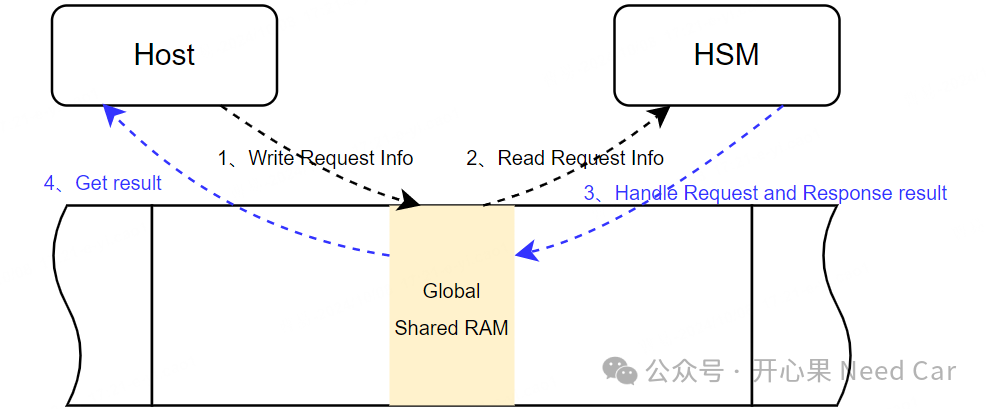
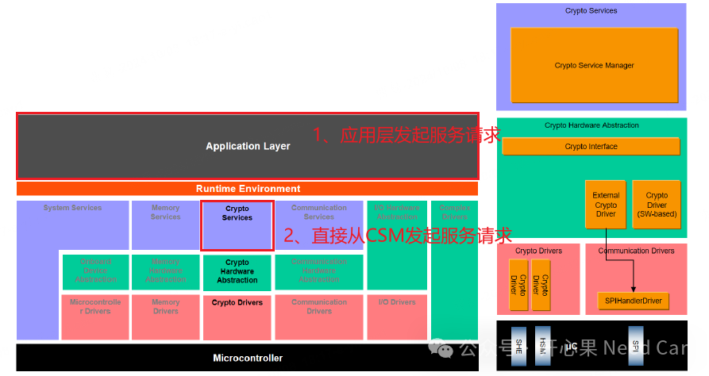
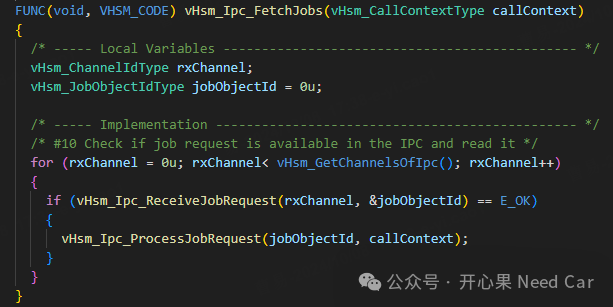
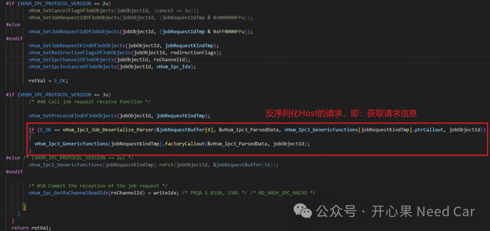
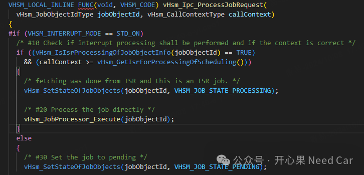
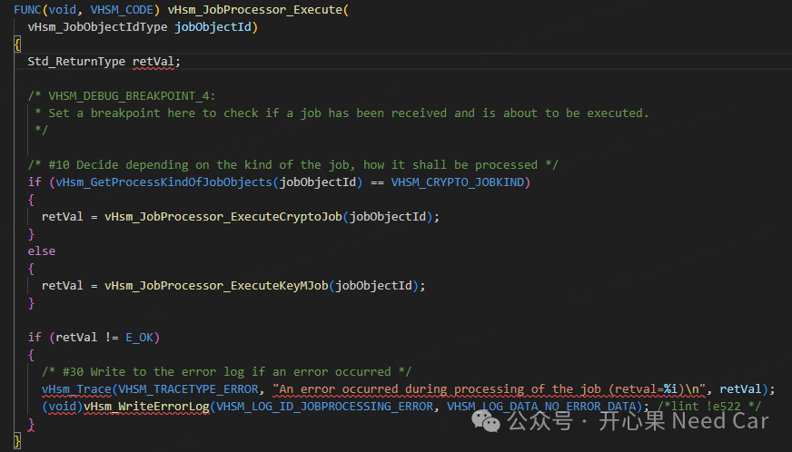
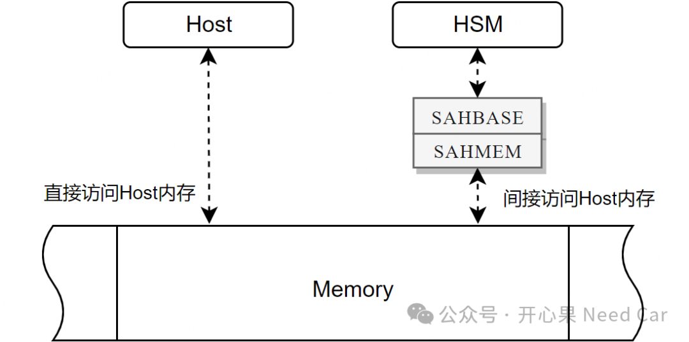

开心果 Need Car · 2024-10-09T09:06:00+08:00 · 微信原文

所以，在开发信息安全时，遇到问题可以从信息交互的共享RAM区判断，即：Host端请求的信息是否准确，HSM端响应的信息是否准确，然后沿着这个点从Host端或者HSM端追对应的代码。

实际的使用中，尤其Bootloader开发中，很少按照CP Autosar架构设计SWC，因此，可以直接调用CSM中的服务接口进行服务请求，eg：Csm_Hash()、Csm_MacGenerate()等。
如果是Application程序，可以通过Port端口连接SWC，发起服务请求。
知道了服务的发起位置，在Host端追程序就不在有什么难点，遇到问题，顺着程序向下追查即可。
OS_ISR1(vHsm_Hal_ExternalRequestIsr){vHsm_ExternalIsr(VHSM_CALL_CONTEXT_ISR1, 0u);/* Clear Flag */HSM_BRIDGE->HT2HSMF = HSM_BRIDGE->HT2HSMF;} /* vHsm_Hal_ExternalRequestIsr */
vHsm_ExternalIsr接口会进一步调用vHsm_Ipc_FetchJobs()接口（vHsm_Ipc.c文件）对Job信息进行解析，具体代码如下：

简单说：接收并处理Host的请求信息（Job）。如果Job请求确认OK，则进行Job的处理。对于Job的接收和确认，主要在vHsm_Ipc_ReceiveJobRequest()接口中完成，根据使用的IPC协议版本进行数据的反序列化处理，即：对Host请求的信息进行获取，对于代码程序如下：

提示：如果开发的功能达不到预期，可以对照共享RAM区中写入的数据，在此处进一步确认HSM获取的信息是否匹配Host请求的信息。
对于Job的处理方式有两种方式：中断（Interrupt）或者轮询（Polling），使用轮询时，将Job的状态挂起（Pending），在对应的调度函数中处理，如下所示：


3、HSM如何知道Host的信息存放的位置
HSM可以单向的访问Host内存，但是，HSM并不能直接对某个地址进行直接访问，而是需要特定的转换，示意如下：

具体转换规则如下：
| Hostaddress = [SAHBASE]+(HSMaddress-SAHMEM)& 0xFFFF |
往期精彩回顾